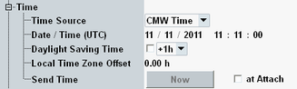

The "Time" section allows you to send configurable date and time information to the UE. Thus you can update the date and time displayed by the mobile. In a real network, this service is typically used to send the current local time to the UE.
The section is only visible if R&S CMW-KS510 is available.

This parameter selects the date and time source that delivers the UTC date, the UTC time, the current daylight saving time offset and the time zone offset.
Option R&S CMW-KS510 is required.
"CMW Time" | Selects the current CMW (Windows) date and time as source. |
"Date / Time" | Selects the other settings in this section as source. |
Defines the UTC date and time to be used if "Time Source" is set to "Date / Time".
Option R&S CMW-KS510 is required.
Remote command:Specifies a daylight saving time (DST) offset to be used if "Time Source" is set to "Date / Time".
You can disable DST or enable it with an offset of +1 hour or +2 hours.
Option R&S CMW-KS510 is required.
Remote command:Defines the time zone offset to be used if "Time Source" is set to "Date / Time".
Option R&S CMW-KS510 is required.
Remote command:Press "Now" to send the date and time information to the UE. This action is only possible if an RRC connection has been established.
"at Attach" selects whether the date and time information is sent to the UE during the attach procedure or not.
Option R&S CMW-KS510 is required.
Remote command: